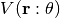
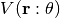

Traditional Approach to Potential Parameterization¶
Given a configuration of atoms denoted and an empirical interatomic potential , we can predict a variety of material properties, which we will denote
Given a configuration of atoms denoted and an empirical interatomic potential , we can predict a variety of material properties, which we will denote